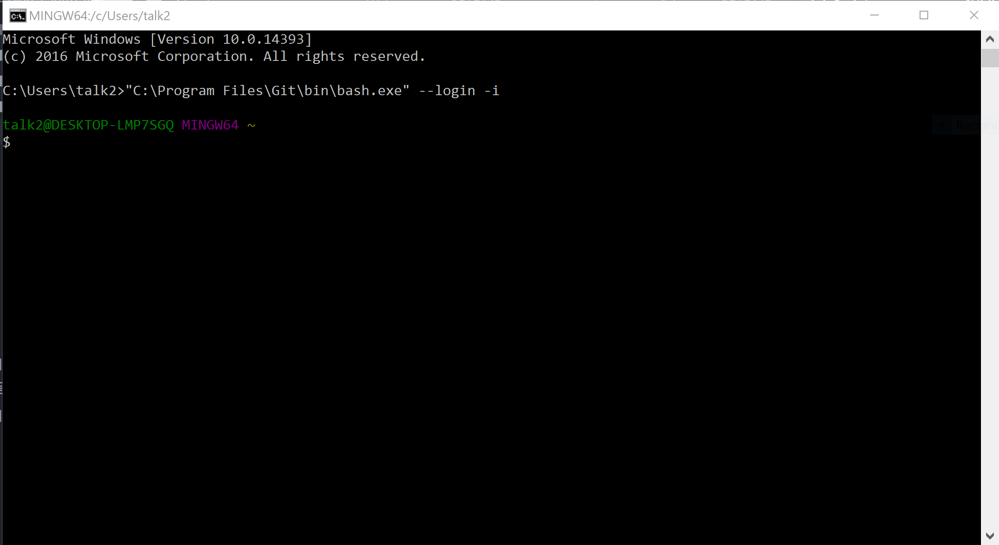

Prep Work
1. Open Slack
If you have a tip that helped you with a step on the worksheet, you can easily share it with the group in Slack. Or if there are any issues with the worksheet [we make typos or there's an update to a tool that we didn't catch before the session], we may post updates in Slack. Plus, after class is over, Slack becomes a tool for you to gain access to mentors as you go through the homework, or any other questions that arise.
If you're using a Chromebook, skip down to the Cloud9 instructions at the bottom.
2. Install/Update Node.js & npm
In the second part of this session, we use a tool called Yeoman, which we install using npm [a package manager, which we'll cover in detail in the August session]. npm requires we install Node.js [which we'll cover in the September session], all you need to know about them for this session is how to install or update these tools.
- Open your CLI
The "terminal" and "command line" (aka CLI, command line interface) are the same thing.
- On Windows, we use Git Bash
- On Mac, we use iTerm2
In your CLI, type:
node --versionDo you get a version number [Version 6 or greater required.]?
No version number [something like
node: command not found]. You need to install Node.Download the Current installer for Windows [v.7.9.0].
Double-click on the downloaded file & follow the installation prompts.
When that finishes, confirm
node --versionreturns a version 6 or greater.
If your version number is 6 or greater, proceed to step 3.
If your version number is less than 6, you'll need to update Node.
Download the Current installer for Windows [v.7.9.0].
Double-click on the downloaded file & follow the installation prompts.
When that finishes, confirm
node --versionreturns a version 6 or greater.
Let's check your version of npm [which was installed with Node]. [Version 3 or greater required.]
In your CLI, type:npm --versionIf your version is 3 or greater, proceed to the Step 3.
If your version is less than 3, update to the latest by typing:
npm install npm -g
3. Create Architecture Folder
Create a folder named Architecture in your CodingAndCocktails folder.
4. Final Step
If you're using a Mac, you're ready for Part I! Windows users, you have one more set-up check.
Yeoman & Git Bash don't play nicely out of the box, so we'll need to run Bash in the Window's native cmd.exe [Command Prompt].
Find & open the Command Prompt program on your computer.
Type the following into the Command Prompt:
"C:\Program Files\Git\bin\bash.exe" --login -iIf your CLI looks like the following, you are ready for Part I [use this in Part II for CLI]. 
If your CLI doesn't look similar to the above screenshot, grab a mentor. You may need to adjust the path to bash [C:\Program Files\Git\bin\bash.exe this part of the command you typed]. And if that doesn't work, install the full version of cmder [another Console emulator for Windows].
Sign up for an account at c9.io
Note: It will ask you for credit card information but you will not get charged for anything since we do not use features of Cloud9 that cost money. Ask a mentor for the Coding & Cocktails card for Cloud9.
Confirm your account from your email and log in to Cloud9.
Select
Workspacesfrom the left side panel if you are not already there.Choose
Create a new workspace.Pick a name for your workspace and enter it - it can be anything you'd like. You do not need a description but feel free to add one if you'd like.
Let's clone a repo from Github so the files we need for Part I will be in our workspace for us.
Visit the Front End Architecture repo in Github.
Click the green Clone or download button & then click the clipboard icon to copy the path.
Go back to Cloud9 & paste this path into the Clone from Git or Mercurial URL field.
Leave your workspace as a "Public workspace".
In the template section choose
Node.jsClick on the
Create Workspacebutton.Cloud9 will take a minute and create your workspace here.
In the terminal section of your workspace, type
mkdir CodingAndCocktailsto create your folder/directory that you'll be working in tonight. You'll notice a new folder show up on the left side of your screen.
To make the terminal section bigger, hover over the top line of the terminal section with your mouse - it will change to an up-down arrow icon and then you can drag up which will also make the file editing area smaller.

- Create a folder within CodingAndCocktails named Architecture.
Any time the worksheet mentions to change directory to your home directory or type cd ~ you will want to type cd ~/workspace instead.
- All the files that were cloned from the Github repo are in your workspace. That means you're ready to start with Part I, Step 2 & skip downloading the files in Step 1.